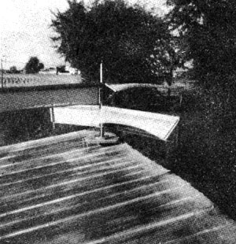

Give the politicians and bureaucrats credit. They're a little slow, but they're finally catching on. It may be too little and too late . . . but they are beginning to appropriate funds for the research and development of renewable, non-polluting energy sources.
On the other hand, it's probably a foregone conclusion that very little-if any-of those appropriations will ever trickle down into the hands of the folks with the ideas that really need to be tested.
People like John M. Thalmann of Crown Point, Indiana.
Now John may not have the breakthrough alternative energy designs that we're all looking for, But he has come up with a couple or three interesting concepts that deserve-at the very least-to be tested on a scale large enough to either prove or disprove the ideas. As it now stands, however, Thalmann has sunk virtually every penny he has in developing-and applying for patents on-three separate inventions . . . and no large corporation, no government agency, no independent research firm has yet offered to underwrite a nickel's worth of his work.
Perhaps the most interesting of John's projects-at least to MOTHER's readers-is the one he calls his wind turbine. In essence, the machine consists of four very light, one-way flaps suspended from offset booms and mounted in sets of two on a vertical shaft. The shaft, of course, is supported by bearings that allow it to revolve. As it turns, each vane swings down to offer its maximum surface to the wind during one half of every revolution . . . and up to feather itself during the other half.
"My invention," Thalmann says, "is closely related to the Savonius S-rotor that MOTHER has mentioned from time to time. It is, however, an improvement over the Savonius because it allows for a much greater rotor diameter than the split oil drums commonly used on that design. In addition, my turbine's blades are very light, do not have compound curves and offer much less resistance to the wind on the return half of each revolution."
It would seem that-compared to a Stuart windplant (one with vertical propeller-like blades on the front)-John's design might have some further advantages. It is much less complex and needs no tail to point it into the wind. Its rotor is made up only of simple, flat surfaces and contains no critical airfoil shapes that are complicated and expensive to manufacture. It requires no 900 conversion gears to transmit the power it generates to the base of any tower on which it might be mounted. It's lighter in weight and easier to balance. Less expensive to manufacture. Its speed is, to a certain extent, self-governing.
The advantages-on paper-go on and on. But does Thalmann's wind turbine really work? And, if it does, does it work well?
Yes, John's turbine really does work. That is: Thalmann has constructed a rotor that is 12 feet in diameter which, when mounted on the roof of a building, does turn in the wind. Someone-quite possibly a technician at Canada's Brace Research Institute-has calculated that this test machine produces 64.8 foot-pounds of gross torque in an air mass moving 30 mph and 115.2 foot-pounds of gross torque in one moving 40 mph. (For a Thalmann turbine that is 16 feet in diameter, the calculated gross torque is, respectively, 115.2 foot-pounds and 204.8 foot-pounds.) Since the blades of John's rotor offer very little resistance to the wind on the return half of each revolution, the net torque seems to be about 85% to 90% of these gross figures.
That sounds good, of course, but it's obvious that Thalmann still needs to hook his wind machine to a variety of workloads and test it under widely varying weather conditions. And wouldn't it be interesting to mount a heavier version of the Thalmann turbine right down in a steadily flowing river? Just to see what happens.
If you'd like to know more about John's work-and help to finance some future flights of fancy-you can write to John Thalmann, 318 North Sherman Street, Crown Point, Indiana 46307. And remember that John is your average impecunious inventor and not a well-funded research lab. Send a stamped, self-addressed large envelope along with your letter ... and stick in a buck or two. Thalmann will probably answer you with a letter and enough information about his experiments to make it all worthwhile.
|
 |
|
|